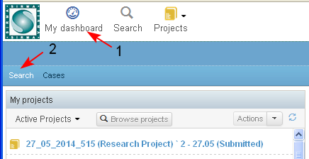
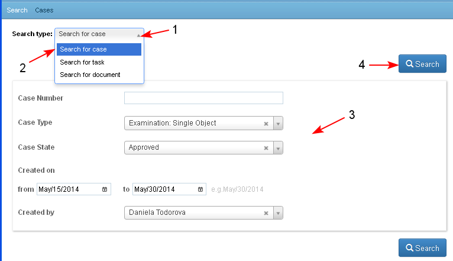
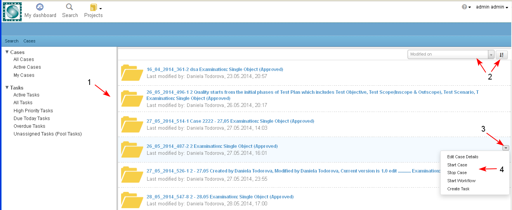

The Search operation allows the user to search among all cases to which he/ she has access.
- The user starts the search operation from an opened Personal Dashboard/ tab "Search" (1-2)

- In the opened screen the user selects the Search type - "Search for case" (1-2), other search criteria if needed (3). The following are available: Case Number, Case Type, Case State, Created on from ... to, Created by.
- The user clicks the button "Search" (4)

- The system displays the search results in a table view (1), which contains the following columns: Case Unique Identifier, Case Type, Case State, Last modified by, Modified on, date and time of last modification. The list of results is paginated, the results may be sorted ascending/ descending (2) by different criteria, selectable from a drop down menu.
If the current user has permissions on a case from the list, next to that case there is a button (3) for selecting possible actions on the corresponding case (4).
The Case Unique Identifier, Case Type, Case State are a direct link and when selected open the corresponding case dashboard.

NOTE: If the Search is started from a Project Dashboard - than the results would be limited only in that project.